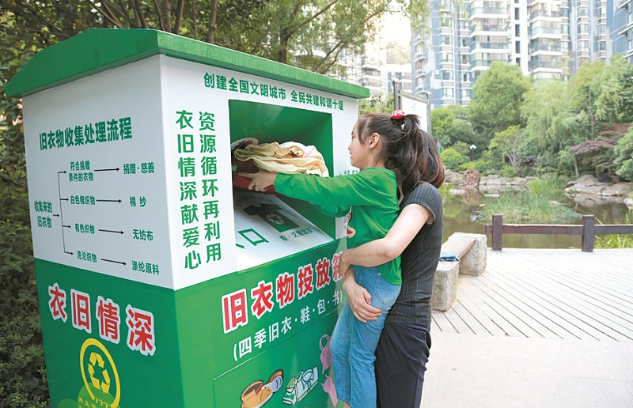
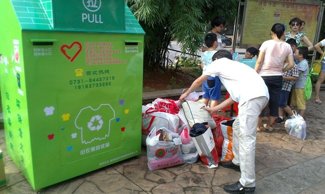

扫一扫
微信关注
极客联盟
扫一扫
微信关注
极客联盟
如今衣物更新换代很快，每年都会收拾出一堆旧衣物，很多市民表示，真是不知道怎么处理才好。但是近年来随着旧衣物回收的活动，市民们把旧的衣物可以放到收集箱内，然后有一些公益组织对这些东西进行整理回收，他们将收集来的旧衣服整理后，捐献给山区困难群众，共同演绎了许多感人的精彩故事。而从11月7日起，鹅城街头及部分住宅小区陆续出现了大量的旧衣物回收箱，激发了更多市民的捐赠热情，使拳拳爱心在百色城荡漾开来……>

百色预计投放100个旧衣物回收箱 “这个项目是在百色市义工协会的监督下，具体由钦州益民新旧衣服接收捐赠服务中心操作执行的，试行半年，时间为2017年11月至2018年5月，试行到期后视国家政策及活动开展情况决定是否续期。”百色市义工协会相关负责人郑月发告诉记者，目前，百色市预计投放旧衣物回收箱100个左右，这些箱子放置在社区、单位、学校等地，居民可以将闲置的旧衣物、书刊投入回收箱中，物资回收后会被进行集中分类处理。对又好又新又干净的衣物、图书经消毒处理后无偿捐赠给有需要的困难群众，不适合捐赠的旧物品由广西豪泽衣再生资源回收有限公司负责回收循环利用。此项目由回收企业提供项目费，其中部分费用用于物流、仓储、消毒、员工等项目运行管理，剩余费用作为公益慈善资金。
“哎呀，这太好了！我马上回去把家里的旧衣服拿下来捐了。”市民韦阿姨告诉记者，这几年家里积攒了不少旧衣服，都快没地方放了。这下可好，家里的旧衣物终于有地方安置了。韦阿姨说，女儿爱网购、尤其爱买衣服，经常是穿了没几次就不穿了，有些连吊牌都没剪就扔在那里了。自己看着可惜，又不知道怎么处理好。十几年前，家里的旧衣物还常常送给农村的亲戚干活穿，这几年生活好了，亲戚也瞧不上这些旧衣服了。看新闻得知不少偏远山区对旧衣物仍有需求，但是不知道怎么送出去。现在好了，小区里有了旧衣物回收箱，换季的时候直接打包放到箱子里就行了，省去了好多麻烦。